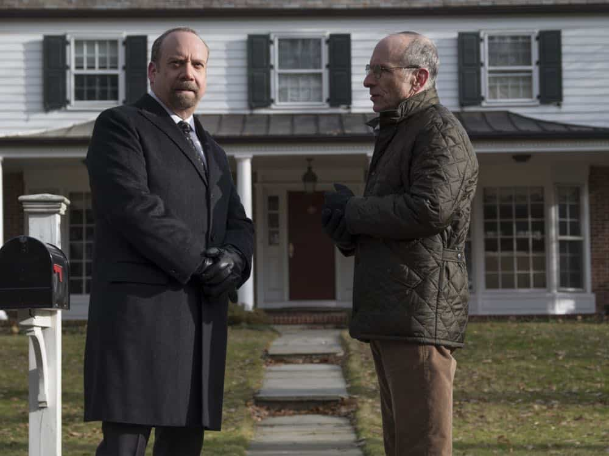

01
Gilbert家门前 · 开场
开场的话，先别当作事实。

剧情事实查克对 Gilbert 说，载玻片此时正在被放进阿克斯家冰箱，探员将在父子晚餐时搜出物证。医生接受“救得了谁就救谁”的说法。紧接着叙事回到三人会议，再由医生家的搜查揭示：这段描述是查克用来安抚、诱导医生的假安排。[1][2]
这一场为什么重要 · 个人解读
这段短距离回溯让观众先分享医生的错误信息，随后才看清被调换的对象。不能沿着开场对白写成阿克斯已被搜查或押走；那恰是查克希望医生相信的未来。医生肯为陷害有罪者辩护的态度，之后也被查克反过来用于瓦解他的抵抗。
因此 → 观众先听见一套计划，再看见另一套落地。